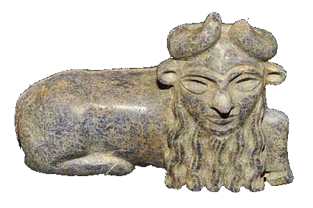

Digital Printing Techniques Personalisation A History of Digital Print
12 Contributors 12 Calendars  Glossary
Glossary
Taurus

A heralding Angel of the Lord will appear unto you, seem confused, ask the date, apologize for visiting a few years early, and tell you something really impersonal.
Xerox6500
Glossary